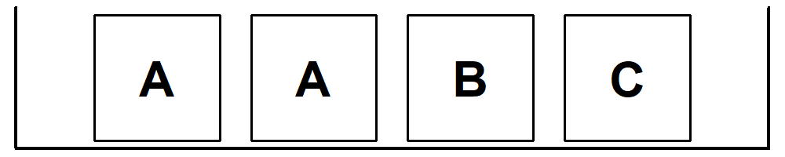
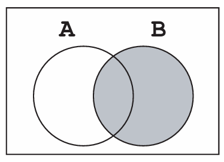
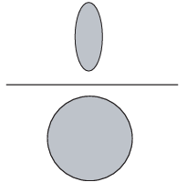
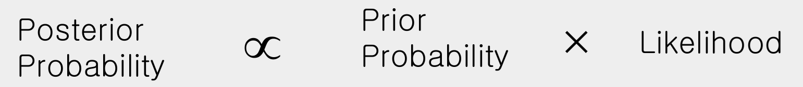

6 Elementary Probability
By the end of this chapter, you should be able to:
- explain the main interpretations of probability,
- define experiments, outcomes, sample spaces, and events,
- compute conditional probabilities,
- apply the multiplication and addition rules,
- distinguish between independence and dependence,
- understand concept of mutually exclusive,
- use Bayes’ rule to update probabilities,
- understand the axioms underlying probability theory.
In this chapter, we introduce the basic ideas of probability needed to understand statistical concepts and reasoning. The literature typically identifies three definitions of probability:
- the classical definition,
- the empirical (frequentist) definition, and
- the subjective definition.
The classical definition assumes that all outcomes of an experiment are equally likely. For example, when rolling a fair die, the probability of obtaining an even number is the ratio of favorable outcomes (2, 4, 6) to total possible outcomes (1–6), which is \(3/6 = 1/2\).
The empirical (frequentist) definition is based on observed relative frequencies. For example, one might talk about the probability that Manchester United beats Chelsea, based on the fraction of past games won by Manchester United.
The subjective definition reflects an individual’s beliefs, informed by experience and available information. For instance, a student may assign a subjective probability to the event that they will earn an A in a statistics course like this one.
Although these interpretations differ philosophically, the mathematics of probability that follows does not depend on which definition we adopt.
6.1 The probability space, experiment, and outcome
Consider tossing a coin. The outcome is uncertain: it may land heads or tails. In probability language, tossing the coin is an experiment, and the result is an outcome.
An experiment produces exactly one outcome, chosen from a set of possible outcomes. This set is called the sample space, denoted \(\mathcal{S}\). A subset of the sample space is called an event.
There is no restriction on what constitutes an experiment. Tossing one coin once, tossing it three times, or even tossing it infinitely many times can each be considered a single experiment.
To make this concrete, consider tossing a coin three times. The sample space is
\(\mathcal{S} = \{HHH, HHT, HTH, HTT, THH, THT, TTH, TTT\}\).
If we assume each outcome is equally likely, then each has probability \(1/8\).
Probabilities always lie between 0 and 1 (or 0% and 100%).
More formally:
\[ 0 \leq Prob(A) \leq 1 \tag{6.1}\]
From this, it follows that for any event \(A\),
\[ P(\sim A) = 1 - P(A) \tag{6.2}\]
where \(\sim A\) denotes the complement of \(A\) or (not A).
6.2 Conditional probability
Conditional probability is best understood through an example.
Suppose a deck of cards is shuffled and two cards are drawn. You win 100 baht if the second card is the ACE of hearts. Before seeing any cards, the probability of winning is \(1/52\).
Now imagine that the first card is revealed and it is the seven of clubs. What is your probability of winning now?
Since one card is no longer in the deck (and you know what it is), the probability becomes \(1/51\).
Put differentlay, when pulling out two cards, because you now know the first card, the probability of the second card is a conditional probability i.e. the probability of a particular event occurring, given that another event has occurred. This is compactly written as \(P(A \mid B)\).
Conditional probability reflects how probabilities change once new information becomes available.
Formally, the probability that event \(A\) occurs given that event \(B\) has occurred is written
\[ P(A \mid B) \tag{6.3}\]
which is read as the probability of \(A\) given \(B\).
(1) Two tickets are drawn at random without replacement from the following box:

- What is the chance that the second ticket is \(\fbox{B}\)?
- What is the chance that the second ticket is \(\fbox{B}\), given thayt the fist is \(\fbox{A}\)?
(2) Three cards are drawn from a deck of cards without replacement. What is the probability that none of them will be hearts
6.3 The multiplication rule
Consider a box containing three tickets labeled R, W, and B. Two tickets are drawn without replacement. What is the probability of drawing R first and then W?
On the first draw, the probability of R is \(1/3\). Given that R was drawn, only W and B remain, so the probability of W on the second draw is \(1/2\). Therefore,
\(P(R \text{ then } W) = \displaystyle \frac{1}{2} \text{ of } \frac{1}{3} = \frac{1}{6}\).
This illustrates the multiplication rule:
\[ P(AB) = P(B \mid A)P(A) = P(A \mid B)P(B) \tag{6.4}\]
For example, the probability that two cards dealt from a deck are both ACES is
\(\displaystyle \frac{3}{51} \times \frac{4}{54}\).
6.4 Independence
Two events are said to be independent if knowing the outcome of one does not affect the probability of the other.
Drawing with replacement produces independent events; drawing without replacement produces dependent events.
Events A and B as said to be independent if
\[ P(A \mid B) = P(A) \tag{6.5}\]
(or equivalently \(P(B \mid A) = P(B)\)).
When we have independence, the multiplication rule conveniently simplifies to
\[ P(AB) = P(A)P(B) \tag{6.6}\]
Try these: (1) A fair coin is tossed twice. What is the chance of getting a head then a tail? (2) A die is rolled three times. (i) Find the chance that the first roll is an ACE. (ii) Find the chance that the first roll is an ACE, the second roll is a deuce, and the third roll is a trey..
6.5 Checking for independence
Suppose we want to know whether graduating from GA program helps someone become a successful manager/CEO.
Let:
- \(A_i\): GA graduate
(=1), or 0 otherwise
- \(B_i\): Becomes CEO
(=1), or 0 otherwise
The table below summarizes survey results:
| Becomes CEO | Does not become CEO | Total | |
|---|---|---|---|
| GA graduate | 0.11 | 0.29 | 0.40 |
| Not GA graduate | 0.06 | 0.54 | 0.60 |
| Total | 0.17 | 0.83 | 1.00 |
The marginal probability of becoming a CEO is 0.17. The joint probability of a GA graduate becoming a CEO is 0.11, and so on.
To get the marginal probability of a student being a GA graduate, we add the two joint probabilities of the first row \((0.11 + 029)\) to get \(0.4\). Note here the two jint probabilities that we add, the probability that we have a GA graduate and CEO plus the probability that we have a GA graduate and not a CEO. Here probabilty of GA is the same, but we have CEO and not CEO. So by adding across CEO type, we essentially integrate it out and we are left with the marginal probabilty of 0.4, the probability of GA graduate.
To test independence, compute
\(P(A_1 \mid B_1) = \displaystyle \frac{P(A_1 B_1)}{P(B_1)} = \displaystyle \frac{0.11}{0.17} \approx 0.65\).
Since \(P(A_1 \mid B_1) \neq P(A_1)\), the two events are not independent.
Becoming a CEO is related to being a GA graduate in this example.
6.6 The addition rule
Two events are said to be mutually exclusive if the occurrence of one prevents the occurrence of the other.
For mutually exclusive events,
\[ P(A \text{ or } B) = P(A) + P(B) \tag{6.7}\]
For example, intuitively, if we draw one card from a deck of cards, the probability of getting either a heart or spades is \(\frac{1}{4} + \frac{1}{4} = \frac{1}{2}\). The additional rule tells us to simply add the chances provided that the two events are mutually exclusive. The probability to get a heart is 1/4 and the probability to get a spade is also 1/4. Are the two events mutually exclusive? Yes, getting a heart means you can’t get a spade, and vice versa. So simply add the chances to get \(1/4 + 1/4 = 1/2.\)
However, for events that are not mutually exclusive, the general addition rule is
\[ P(A \text{ or } B) = P(A) + P(B) - P(A \text{ and } B) \tag{6.8}\]
For example, if we toss two dice at the same time, to get at least ace on the two dice, we calculate the probability using the general additional rule, i.e we add the chances and subtract the joint probability because the two events are not mutually exclusive since having an ace on one of the die does not exclude the possibility to get an ace on the other die. In other words, it is possible to get ACE in both dice, i.e. the events are not mutually exclusive! Hence we get \(1/6 + 1/6 - 1/36 = 11/36.\)
Events A and B as said to be mutually exclusive if
\[ P(A \text{ and } B) = 0 \tag{6.9}\]
Note that we have used the word ‘or’ and ‘at least’ for the additional rule, which can be contrasted with ‘and’ for the multiplication rule. In terms of set operations, these are the union and intersect operators, respectively.
(1) A die is rolled twice. What is (a) the chance that the first roll is an ace or the second roll is an ace? (b) the chance that the first roll is an ace and the second roll is an ace? (c) the cace of getting at least one ace?
(2) A deck of cards is shuffled. What is (a) the chance that the top card is an ace of spades or the bottom card is an ace of spades? (b) the chance that the first card is an ace of spades and the bottom card is an ace of spades?
6.7 Venn diagrams
Venn diagrams are very useful when thinking about simple probability problems.
For example, two events A and B that are not disjoint can be drawn as follows:

Even more useful, the conditional probability can be shown by the following:
\(P(A|B) =\)
 or \(\frac{P(AB)}{P(B)}.\) That is, given B we wish to know A.
6.8 Bayes’ rule
We can easily derive the Bayes’ Rule using Venn diagrams.
Taking a sample space with event A:

Similarly, the probability of B can be shown using the Venn diagram as follows: \

Combining the two Venn diagrams we get:\

Or what is the same thing
\[ P(A|B) = \frac {P(A \text{ and } B)}{P(B)} = \frac {P(A \text{ and } B)}{P(A \text{ and } B) + P(\sim A \text{ and } B)} \]
And finally from the definition of joint probabilities we have the Bayes Rule.
\[ P(A \mid B) = \frac{P(A)P(B \mid A)}{P(A)P(B \mid A) + P(\sim A)P(B \mid \sim A)} \tag{6.10}\]
So how do we use the Bayes’ Rule? An example should illustrate this. Assume that on a dark night, there was a hit and run accident. A witness, who says that she saw a blue taxi, agrees to sit in the court to testify for the victim so that the latter might get some compensation from the blue taxi company. Incidentally, there are 200 taxis in this town; 170 or 85 % belong to the black taxi company and 30 or 15 % are blue. According to tests conducted under the same condition, the witness identifies blue taxi about 80 % of the time. Now, the question is, What is the probability that she was right, that she really did see a blue taxi that night?
- 15% of taxis are blue
- 85% are black
- The witness correctly identifies blue taxis 80% of the time
- She incorrectly identifies black taxis as blue 20% of the time
To use Bayes’ formula, all we have to identify are a few marginal and conditional probabilities; \(P(A)\) is the probability that the taxi involved in the accident is blue (i.e 15 %.) Hence \(P(\sim A)\) that is the probability of a black taxi, is 85 %. \(P(B \mid A)\) is the probability that the witness claims to have seen blue when a blue taxi was really involved, in other words, her accuracy in identifying a blue taxi correctly under the conditions. Conversely, the only other probability we need now to complete the equation is \(P(B \mid \sim A)\), which is the probability that the witness sees a blue taxi when in fact a black taxi was involved. i.e 20 %. Plugging all the relevant probabilities gives:
\(P(A \mid B) = \displaystyle \frac{0.15 \times 0.80}{(0.15 \times 0.80) + (0.85 \times 0.20)} = \frac{0.12}{0.29} \approx 0.41\).
The probability that the witness says she saw “blue” and that it was really a blue taxi is only 0.41, hardly sufficient for the courts to ask the blue taxi company to pay compensation!1
Even confident testimony can be misleading when base rates are ignored.
We can represent the example in a tree diagram.
Start: Taxi Accident
|
┌───────────────────┴───────────────────┐
│ │
Blue Taxi (A) Black Taxi (~A)
P(A) = 0.15 P(~A) = 0.85
| |
┌──────┴───────┐ ┌──────┴───────┐
│ │ │ │
Says Blue (B) Says Black (~B) Says Blue (B) Says Black (~B)
P(B|A)=0.80 P(~B|A)=0.20 P(B|~A)=0.20 P(~B|~A)=0.80
| | | |
▼ ▼ ▼ ▼
Joint: 0.12 Joint: 0.03 Joint: 0.17 Joint: 0.68
P(A∩B) P(A∩~B) P(~A∩B) P(~A∩~B)We see that:
\(P(AB) = 0.12\)
\(P(B) = P(A∩B) + P(\sim A∩B) = 0.12 + 0.17 = 0.29\) i.e. the marginal probability of \(B\) by integrating out \(A\) by summing across \(A\).
And since we are looking for \(P(A|B)\) i.e. \(P(AB)/P(B) ≈ 0.41\), which is the probability the taxi was blue given that the witness says blue!
6.8.0.1 Bayes’ Updating
Essentially, we have:

Prior Probability (15%): This represents our initial belief about the situation before considering the witness testimony. Based on the town’s taxi distribution, we know that only 15% of taxis are blue. This is our baseline expectation that any random taxi involved in an accident would be blue.
Likelihood (Witness Accuracy): This quantifies how probable the observed evidence (witness testimony) is under different hypotheses. The witness correctly identifies blue taxis 80% of the time and incorrectly identifies black taxis as blue 20% of the time. This creates two competing likelihoods: - If the taxi was actually blue, we’d expect her to say “blue” 80% of the time - If the taxi was actually black, we’d expect her to mistakenly say “blue” 20% of the time
Posterior Probability (41%): This is the updated probability that combines our prior belief with the new evidence. Using Bayes’ theorem, we find that even though the witness says she saw a blue taxi, there’s only about a 41% chance she’s actually correct. This counterintuitive result occurs because blue taxis are rare (15%) and the false positives from the much more common black taxis outweigh the true positives.
Intuition Behind the Result: The Bayesian approach forces us to consider both the reliability of the evidence AND the base rates (or prioir provbailities). Even with a seemingly reliable witness (80% accurate), the rarity of blue taxis means most “blue” identifications will be errors. This explains why the court should be skeptical—the witness’s claim only increases the probability from 15% to 41%, far from “beyond reasonable doubt.”
Extension: What If We Had Another Witness? If a second independent witness also claimed to see a blue taxi, Bayesian updating would apply again. The first posterior (41%) would become our new prior, and we’d combine it with the second witness’s reliability. Intuitively, this would increase our confidence, but mathematically, we’d need to consider (1) whether the witnesses are truly independent, (2) whether they have the same accuracy rates, and (3) the possibility of collusion or shared biases.
With two independent, reliable witnesses both saying “blue,” the probability that the taxi was actually blue would increase substantially, potentially making the evidence strong enough for legal purposes. This demonstrates how Bayesian updating elegantly handles accumulating evidence—each new piece of information updates our beliefs in a mathematically rigorous way.
6.9 Axioms of probability
Probability rests on three axioms:
- Nonnegativity: \(P(A) \ge 0\)
- Additivity: For disjoint events, \(P(A \cup B) = P(A) + P(B)\)
- Normalization: \(P(\mathcal{S}) = 1\)
From these axioms follow many useful properties, such as:
- If \(A \subset B\), then \(P(A) \le P(B)\)
- \(P(A \cup B) = P(A) + P(B) - P(A \cap B)\)
- \(P(A \cup B) \le P(A) + P(B)\)
Probability provides a formal language for reasoning under uncertainty. In this chapter, we introduced experiments, events, conditional probability, independence, and the fundamental rules governing probabilities. These ideas form the foundation for statistical inference in the chapters ahead.
6.10 Exercises
6.10.1 Conceptual questions
Three views of probability
Explain the difference between the classical, frequentist, and subjective interpretations of probability.
Give one real-world example for each interpretation.Probability without philosophy
The chapter argues that the mathematics of probability does not depend on which interpretation we adopt.
Explain what this means in your own words.Experiments and outcomes
Consider the experiment “toss a fair coin until a head appears.”- What is the sample space?
- Is this a finite or infinite sample space?
- Why is this still considered a single experiment?
- What is the sample space?
Events vs outcomes
Explain the difference between an outcome and an event.
Can a single outcome itself be an event?Conditional probability and information
Why does conditional probability capture the idea of learning from new information?
Give an example (not involving cards or coins) where learning new information changes probabilities.Independence vs mutual exclusivity
Are mutually exclusive events ever independent?
Carefully explain your answer.
6.10.2 Basic probability calculations
- Coins and sample spaces
A fair coin is tossed four times.- How many outcomes are in the sample space?
- What is the probability of getting exactly two heads?
- What is the probability of getting at least one head?
- How many outcomes are in the sample space?
- Complements
Let event \(A\) be “a randomly selected student passes an exam”, with \(P(A)=0.85\).- What is \(P(\sim A)\)?
- Interpret this probability in words.
- What is \(P(\sim A)\)?
- Cards and conditional probability
A card is drawn at random from a standard deck.- What is the probability that it is a queen?
- What is the probability that it is a queen given that it is a face card?
- Are the events “queen” and “face card” independent?
- What is the probability that it is a queen?
6.10.3 Venn diagrams
- Fifty students from GA met to form a club. Fifteen students wore glasses, 18 are left-handed and 21 are female. There are four females who are left-handed, three females wear glasses, and five members who wear glasses and are left-handed. Only one member wers glasses, is left-haded and female.
- Draw a Venn diagram to represent these data.
- A member is selected at random. Find the probabilty that the member
- is male, does not wear glasses and is not left-handed.
- wears glasses given that she isleft-handed and female.
6.10.4 Multiplication rule and independence
Without replacement
Two cards are drawn without replacement from a standard deck.- What is the probability that both cards are red?
- What is the probability that the first card is an ace and the second card is also an ace?
- What is the probability that both cards are red?
With replacement
Repeat Question 10, but now assume the first card is replaced before the second draw.
Explain why the probabilities change.Testing independence
Two events satisfy\(P(A)=0.4\), \(P(B)=0.5\), and \(P(AB)=0.2\).
- Are \(A\) and \(B\) independent?
- Justify your answer mathematically.
- Are \(A\) and \(B\) independent?
The events A and B are such that \(P(A) = 1/3\), \(P(B) = 1/4\) and \(P(A \cup B) = 1/2\).
- Show that A and B are independent
- Find \(P(A| \sim B)\)
6.10.5 Addition rule and mutually exclusive events
Addiitonal rule
Two events satisfy\(P(X)=1/5\), \(P(Y)=1/4\), and \(P(X| Y )= 2/5\).
- Find \(P(X \text{ or } Y)\)
Mutually exclusive or not?
For each pair of events below, state whether they are mutually exclusive and explain why:- Drawing a heart and drawing a spade
- Drawing a heart and drawing a red card
- Getting a head on the first toss and a tail on the second toss
- Drawing a heart and drawing a spade
Dice example
Two fair dice are rolled.- What is the probability that at least one die shows a 6?
- Use the general addition rule to compute your answer.
- What is the probability that at least one die shows a 6?
6.10.6 Mixed problems
- Suppose that 6 balls are randomly thrown into 10 baskets. Find the probabilties that:
- No basket will recieve more than one ball/
- The first three balls enter basket 1.
- At least one basket will recieve more than one ball.
- Three students from GA enter a mini-marathon. The probabilities that each will complete the marathon are \(0.9, 0.7\) and \(0.6\). Assuming that their performance are independent, find the probability that:
- they all complete the marathon
- at least two complete the maraton
6.10.7 Bayes’ rule and interpretation
- Medical testing
A disease affects 2% of a population.
A diagnostic test correctly identifies the disease 95% of the time, but incorrectly signals disease in 5% of healthy individuals.- Define the relevant events.
- Use Bayes’ rule to compute the probability that a person who tests positive actually has the disease.
- Explain the result in words.
- Define the relevant events.
- Base-rate neglect
In the taxi example discussed in the chapter, many people expect the probability to be close to 0.8.
Explain why this intuition is misleading. - Base-rate neglect
Two cins, oe fair and another havong two tails, are placed in a hat. One coin is seleted at random and tossed. You are allowed to see only the up-face, which happens to be tails. What is the probability that this is the unbalanced coin?
6.10.8 Set Operations and Probability Identities
- Set operations and De Morgan’s laws
- Consider rolling a fair die. Let
- \(A\) be the set of outcomes where the roll is an even number, and
- \(B\) be the set of outcomes where the roll is greater than 3.
Calculate and compare the sets on both sides of De Morgan’s laws:
\[ \sim (A \cup B) = \sim A \cap \sim B \qquad \text{and} \qquad \sim (A \cap B) = \sim A \cup \sim B. \]
- Show that
\[ \sim A = (\sim A \cap B) \cup (\sim A \cap \sim B), \]
and
\[ \sim B = (A \cap \sim B) \cup (\sim A \cap \sim B). \]
- Show that
\[ \sim (A \cap B) = (\sim A \cap B) \cup (\sim A \cap \sim B) \cup (A \cap \sim B). \]
- Probability inequality
Prove that for any two events \(A\) and \(B\),
\[ P(A \cap B) \ge P(A) + P(B) - 1. \]
Hint: Use the axioms of probability and the addition rule.
- Law of total probability
Show the identity
\[ P(A \mid B) = P(C \mid B)P(A \mid B \cap C) + P(\sim C \mid B)P(A \mid B \cap \sim C). \]
Explain briefly how this formula relates to conditioning on whether event \(C\) occurs or not.
6.10.9 Reflection and interpretation
Probability and statistical reasoning
Explain why probability theory is essential for understanding statistical concepts such as correlation and regression.From probability to inference
Which ideas from this chapter do you think will be most important when we later study statistical inference?
Briefly explain why.
Another way to see this is, say we present the witness the 30 Blue taxis, she will identify 80% or 24 as blue (and 6 as black) under the same night conditions. Also she will identify 20% or 34 of 170 black taxis as ‘blue’. So out of 54 taxis she calls ‘blue’, only 24 are in fact blue, which is about 41%.↩︎